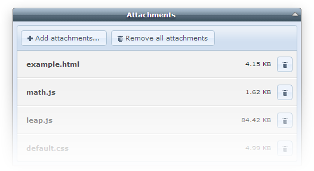
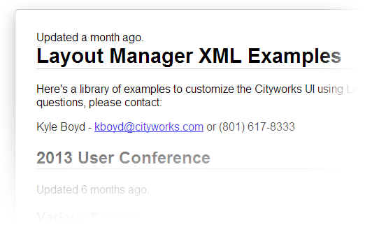
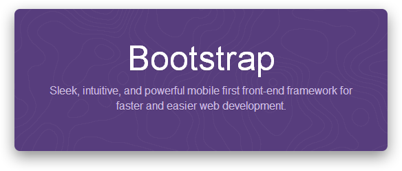
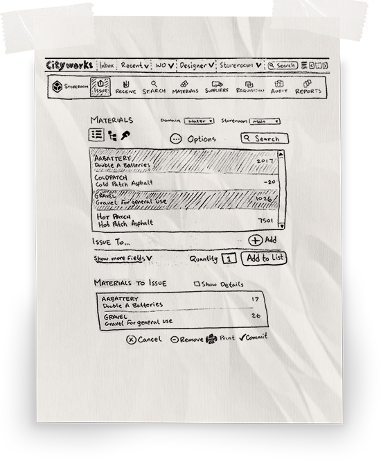

Kylir's Reveal
December 2013
(Presentation created using reveal.js)
Attachments
Fixed bugs 3825, 3830, 3906, 3922, and 3978.
XML Examples
https://www.mycityworks.com/help/xmlexamples/ - 40+ examples
- Hiding controls, required fields, modals, tabs...
- Twitter feed, map plugins, inbox refresh, convert textboxes to dropdowns...
Layout Manager Enhancements
- Upgraded to Bootstrap 3
- CwNumeric
- CwSearchbox
- CwSelect
- CwTextbox
- Other small changes
Storeroom Issue Form
Field Mode
- Fixed bug 3782 where fields were being cropped
- Made Cityworks redirect to first menu item
- Removed the frameset from field mode
Remember Me

- Fixed issues with the login screen getting stuck in a loop
- Added session timeout handling (#3774)
- Added "remember me". Developers and users rejoice!